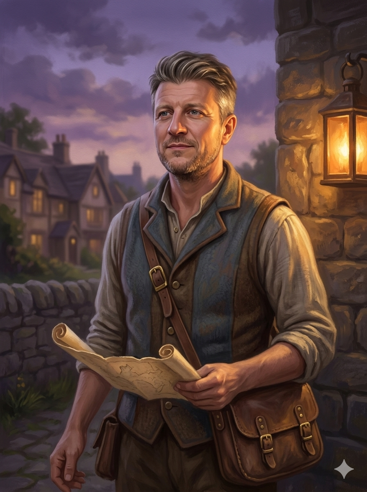

The Gather
How the village runs, day to day. Pick a workstream to see it as a swimlane: every keeper who acts in that stream, side by side, across the lifecycle stages. Filter by product to see who lights up where. The HOW, built to the Loop's own architecture and leaner than a large institution by design.
Product
Seven streams of work. Pick one to see who does what within it.
The standing rhythm · runs across every stream
Weekly focus check · two build days protected
The 2/4 cadence · week four is the cave
The live pipeline · warm, never cold
The money beat · invoices, chase, product share monthly
Governance & IG · standing, not per engagement
The Funnel
Winning and qualifying the work, and converting it onward. The commercial engine seen as a stream rather than a wheel.
the Millwheel
The GateQualification
The WelcomeOnboarding
The WorkDelivery
The TendingFollow-up
The HarvestEvidence
The LedgerRenewal
◍The Clientthe leader
Arrives through the signal: a talk, a Substack piece, a Black Egg result that named the gap. Enquires, and meets the routing rules: senior leader, can fund the fee, timing fits.
Renews or converts onward: Root to Grow into the Greenhouse at the week-five conversation, a pilot into a programme. The funnel's whole design is that the next step is already warm.
BDBD seatopen
Owns qualified inbound and conversion targets, fed by warm pipeline, never cold hunting. Routes each enquiry by the routing rules and hands Rachel only the conversations worth her days. Held by Rachel until filled. ⚑ interim
Clean commercial handover into delivery: what was sold, on what promise, at what price, recorded once and passed whole to the Welcome bench. Delivery never re-discovers the deal. ⚑
Stays out of the room. Conversion never bleeds into delivery; the consent moment is never an upsell moment. ⚑
Keeps warm relationships alive between engagements; the pipeline stays live so renewal is a continuation, not a re-sell. ⚑
Turns cleared evidence into the enterprise / CPO conversation as Horizon 3 nears; the Deep Vault travels with the pitch as the trust story. ⚑
Owns conversion: pilot to programme, cohort to membership, with pilot-to-programme held at or above one in two. The revenue bridge made smooth. ⚑
 Rachelfounder
RachelfounderMeets only warm, qualified conversations. Says yes to fit, no to a sixth bespoke; every yes answers the Hourglass question first: whose days does this take? ⚑ rule proposed. Organisational sponsors for cohorts enter here too. ⚑
Carries the conversion conversations while the BD seat is empty. ⚑ interim

Scottoperating modelBuilds and runs the qualification machinery; holds the capacity gate against the Hourglass. "Not yet" is a defined power.
The qualification funnel as pipeline; renewal mechanics underneath; the monthly product-share view steering the substitution arc.
HHannahmethodology
The substance gate: does this serve a real commitment, or start something before the last thing is finished? Paired with Scott's capacity gate; both must open before Rachel's time is spent.
VAThe Operatorplatform · VA ⚑
Runs the intake plumbing: the Kajabi form as the single point of entry, enquiries routed by the rules without founder hands. ⚑ actor placement to confirm
Checkout, access and sequences configured so a yes becomes a scheduled, paying client without a founder touching it. ⚑
Renewal and chase sequences run on the platform, junior-operated; founders see the monthly view, not the plumbing. ⚑
OnboardingFrom yes to ready: contracting, consent kick-off, scheduling, access. The NHS onboards a supplier; we onboard the client.the Welcome bench
The GateQualification
The WelcomeOnboarding
The WorkDelivery
The TendingFollow-up
The HarvestEvidence
The LedgerRenewal
◍The Clientthe leader
Signs, contracts and consents, the consent moment kept separate from any payment or upgrade; each consent layer granted one at a time, each independently withdrawable. Scheduled in.
Arrives ready: access granted, materials in hand, nothing chased on the day.
RachelfounderFounder presence at kick-off where the relationship needs it. On the Loop, arranges the discovery call with every voice informed and consented to recording before it starts.
Scottoperating model
Contract issued on the yes; terms per product, owned in-house, two commercial solicitors on the team. On the Loop, the pattern-contribution clause travels with the contract. ⚑ clause drafting with the reviewer
Onboarding end to end: scheduling, materials, access, the same way every time; the brief lands with delivery whole, before session one.
Everything in place before session one; the cohort runbook handed to the room. ⚑ runbook designed, confirm and implement
HHannahmethodology
Baseline diagnostics at entry: the VQ Assessment and the Black Egg side by side, two instruments, not one; the companion questionnaire attached to every baseline, no exceptions.
VAThe Operatorplatform · VA ⚑
Kajabi sequences send the welcome, the participant information and the consent capture in the right order, configured under the IG rules; nothing manual to forget. ⚑
DeliveryRunning the work: cohorts, the membership, the engagement, the coaching. Where the change happens.the delivery systems
The GateQualification
The WelcomeOnboarding
The WorkDelivery
The TendingFollow-up
The HarvestEvidence
The LedgerRenewal
◍The Clientthe leader
Does the work: the six-week cohort, the monthly membership rhythm, the engagement workshops, the coaching room.
Practises between sessions with the anchors set at the close; re-takes the diagnostic quarterly in the Greenhouse; stays in the rhythm rather than drifting.
RachelfounderDelivers Root to Grow live with Hannah, cohorts of 10–12; leads the Greenhouse rhythm; runs the Loop elicitation workshops live while the engine is still tacit. ⚑ externalising it is the unlock
Anchors set at the close travel home with every leader. Premium coaching on the White Sofa, capped, every relationship routing back to the diagnostic.
HHannahmethodology
Co-delivers Root to Grow live with Rachel; the methodology identical in every room, version-controlled; delivery support and assurance on the Loop.
The behaviour-evidence approach live across cohorts: proof of change, not satisfaction scores. What the Tending produces is the Harvest's raw material.
Scottoperating model
Delivery systems beneath every engagement: the runbook, the workbenches, the session logistics. On the Loop, the architecture itself. ⚑ designed, confirm and implement
Follow-up workflows; the visible/cave cadence protected operationally, the Village Clock enforcing what the Hourglass counts.
MoneyInvoicing, collection, renewal, pricing. The product share of revenue moving upward.the Wares ledger
The GateQualification
The WelcomeOnboarding
The WorkDelivery
The TendingFollow-up
The HarvestEvidence
The LedgerRenewal
◍The Clientthe leader
Pays: £1,495 up front for Root to Grow, ~£125 a month from cohort-end for the Greenhouse, ~£30k on contract for the Loop.
Renews monthly; the membership run-rate (~£52.5k exiting year one) compounds into next year. ⚑ the retention assumption is watched on the Wares
Scottoperating model
Budget signal captured at intake; "can fund the fee" is a routing rule, so no price conversation reaches Rachel unqualified.
Invoice raised on signature per the product's schedule; payment confirmed before access opens. ⚑ assumption, to confirm
Invoicing and collections on the chase ladder; renewal mechanics; the monthly product-share view steering the substitution arc: roughly twenty stable members buys back one bespoke engagement.
BDBD seatopen
Owns conversion as the revenue bridge: pilot to programme, Root to Grow to Greenhouse, held at or above one in two on pilots. ⚑
VAThe Operatorplatform · VA ⚑
Checkout and payment plans run on the platform; failed payments retried and chased by sequence, not by founders. ⚑
Renewal billing runs automatically on the chase ladder, junior-operated. ⚑
Evidence & assuranceThe beta as a by-product of revenue: baselines, the threshold, impact, the longitudinal cohort.the Observatory
The GateQualification
The WelcomeOnboarding
The WorkDelivery
The TendingFollow-up
The HarvestEvidence
The LedgerRenewal
◍The Clientthe leader
Baseline taken at entry, the start of their own line; the companion questionnaire attached to every baseline.
Re-measured quarterly in the Greenhouse: the held cohort whose change-over-time is the dataset almost nobody else has.
Sees their change in the evidence and becomes the proof: the case study (its own separate consent), the referral.
HHannahmethodology
Falsification criteria locked before the first beta invitation; the critic line is hers, adjusted only on evidence, never on commercial pressure.
Methodology version-controlled in every room; drift in the instrument is drift in the evidence.
Runs the quarterly re-measure cycle; ~35 members re-measured by year-end turns snapshots into a longitudinal line.
The evidence threshold: n=20 hygiene, n=60 mid-beta, the cave-month analysis against pre-set criteria, α ≥ 0.70 per dimension, ρ ≥ 0.25 on the outcome link.
Impact reporting that feeds the buyer conversation; a claim powers a commercial application only once it has cleared its threshold; six to ten real anonymised case studies replace the composites. ⚑
Scottoperating model
Research use captured as its own consent layer before any baseline lands in the dataset; no consent, no row.
The data plumbing under consent: pseudonymised within 30 days, identifiers split from responses; the dataset usable and clean when the academic partner enters.
Information GovernanceConsent, IP and data, owned in-house with external review. The launch gate before any beta invitation.the Deep Vault
The GateQualification
The WelcomeOnboarding
The WorkDelivery
The TendingFollow-up
The HarvestEvidence
The LedgerRenewal
IGScott · IGconsent · ip · data
Consent posture set at intake; the lawful basis settled before a conversation is booked. Article 9 is the binding constraint on a cautious reading; consent-led is the drafter's route, legitimate-interests held open. ⚑ with the reviewer
The consent, IP and data architecture: layered consent, each layer separately granted and separately withdrawable, the consent moment never bundled with the commercial moment. External legal review is the launch gate; this lane runs as drafted, not yet as passed. ⚑
Data captured only under consent, against the Data Protection Inventory; two classes in one regime: class A the beta participants, class B the engagement-derived pattern data. Processor map ⚑ pending tooling choices.
Ongoing consent management between sessions; withdrawal honoured prospectively, data already in analysis retained pseudonymised, the standard research carve-out. ⚑ carve-out wording with the reviewer
Pseudonymisation within 30 days of capture, identifiers split from responses; debrief audio deleted within 90 days, the transcript is the value, the recording the risk. The academic partner inherits clean evidence, not a liability.
Retention and deletion to the schedule ⚑ proposed pending review: consent records programme plus six years, the pseudonymised research set ten years, class-B patterns indefinite once anonymised to the ICO standard.
Rachelclass B DP leadEvery voice on a Loop discovery call informed and consented to recording before it starts; the engagement privacy notice issued.
Discovery captured; client staff are the data subjects, the organisation is not.
Patterns abstracted to organisation-unidentifiable form, tested against the ICO standard; sector papers from aggregates only. No class-B abstraction before the review confirms the standard.
Raw transcripts and client documents returned or destroyed per contract at close.
◍The Clientthe data subject
Gives informed consent, separate from payment, layer by layer: participation, research use, recording, the free-text item, the mini-360, case studies, onward sharing.
Withdraws any layer at any time; honoured prospectively, with the analysis carve-out explained up front.
May consent to a case study, or not; specific consent governs its whole life, reviewed at three years.
HHannahmethodology
Recorded debriefs and the optional mini-360 only with explicit, separate consent; the third-party respondent has their own consent route.
The cave-month analysis runs on the pseudonymised set; the analysis never needs names.
VAThe Operatorplatform · VA ⚑
The capture tooling (assessment platform, storage, transcription) configured under this architecture; processors not yet selected, data-processing agreements before anything runs. ⚑
Signal & CategoryThe founder signal that draws people in, and the category being built. The river and the smoke on the wheel.the Millwheel · river & smoke
The GateQualification
The WelcomeOnboarding
The WorkDelivery
The TendingFollow-up
The HarvestEvidence
The LedgerRenewal
RachelfounderThe signal that draws people to the gate: content, speaking, the story; sixty-three pieces across seven angles in the content bank. The river, Recognition.
Turns outcomes into story and signal; the Harvest feeds Recognition, swelling the river that drives the wheel.
HHannahmethodology
Holds the room's language to the Construct: the sacred nouns identical in every mouth. The day two keepers define Signal differently in front of a buyer is the day the category blurs.
The evidence that makes the category claim believable rather than asserted; no public claim outruns its cleared threshold.
BDBD seatopen
Turns evidence into the enterprise / CPO conversation; the category becomes next year's recognition, the smoke drifting back to the river. ⚑
What this page is. The PowerVox operating floor in working draft, built to the Loop's workstream architecture: pick a stream, see every keeper in it at once. Cells marked ⚑ are the Cartographer's proposals; they await keeper confirmation. The Operator lane (the platform and the VA) and Rachel's class-B lane are additions from this depth pass, both ⚑ to confirm. Empty cells are honest, not unfinished: that keeper has no part in that stage of that stream. Underlined systems open the Burrows; the standing rhythm above the streams carries the beats that belong to no single engagement; the client lane's five faces live at the Villagers ⚑.
Enfys · The Gather · how the village runs
Proprietary & confidential